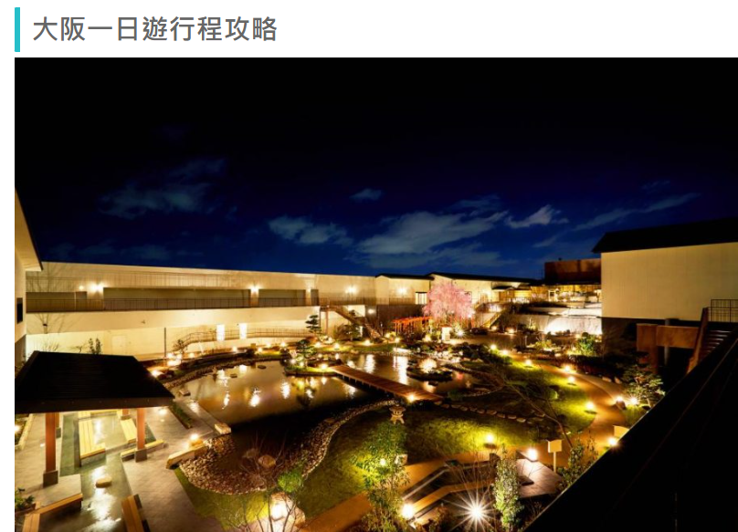

大阪一日遊攻略
| 日期 | 行程 |
|---|---|
| 第一天 | 天王寺站 -> 大阪城公園 -> 天神橋筋商店街 -> 飯店休息 |
| 第二天 | 動物園前站 -> 大國町站 -> 難波大阪神社 -> 道頓堀(心齋橋) -> 黑門市場(晚餐) -> 飯店休息 |
| 第三天 | 通天閣 -> 四天王寺 -> 天王寺動物園 |
| 第四天 | 動物園前站 -> 日本橋轉車往奈良 -> 奈良公園 -> 東大寺 -> 回京都放行李 -> 敘敘宛燒肉 |
| 第五天 | 清水寺 -> 一年坂~三年坂 -> 花見小路 -> 伏見稻荷神社 -> 伏見稻荷吉伊卡哇 |
| 第六天 | 京都水族館 -> 京都寶可夢中心 -> 買伴手禮 |
| 第七天 | 起床趕車回機場 |
日本行 (估計 7 天)
飛機 (從桃園飛往大阪關西機場)
關西機場 -> 通天閣 (南海機場線) (鐵路) (1小時)
住宿
安排在難波周邊 (下地鐵放行李) (關西機場 → 難波(特急Rapi:t&空港急行）))
大阪
從難波往大阪城 (搭乘京都地鐵 Osaka metro 從難波御堂筋線紅線 -> 中央線本町 -> 中央線谷町四丁目站) 步行到大阪城
小型景點
通天閣 | 天王寺動物園 (走路 3 分鐘) (約2~3小時就看完) | 四天王寺(外觀造型獨特) (1 天) 從難波御堂筋線紅線 -> 天王寺站紅線
難波八阪神社、臨空城Outlet、心齋橋(逛街) | 道頓堀(潮流服飾)、黑門市場(海鮮市場)(1天)
從難波御堂筋線紅線 -> 心齋橋站紅線
天神橋筋商店街(藥妝店) (千日線(粉色線)日本橋 -> 堺筋線(棕色線)(K12 扇町))
大阪難波站 -> 近鐵奈良線(火車)-> 終點奈良車站 (車程約 50 分鐘)
奈良公園(奈良神社)
京都住宿規劃：
大阪住 2025_2_17 ~ 2025_2_20
住所：
大阪新今宮 2 號店
網路訂房 可以參考樂天 JANLAN
京都
京都伏見稻荷神社(考量)
京都水族館 (大力推薦)
音羽山 清水寺
八坂神社
花見小路 (日本藝妓)
京都神奇寶貝中心
京都一日遊
京都必去景點